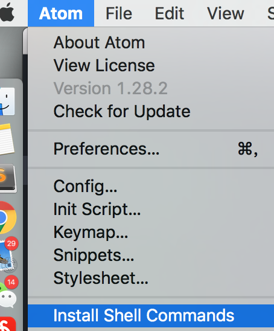
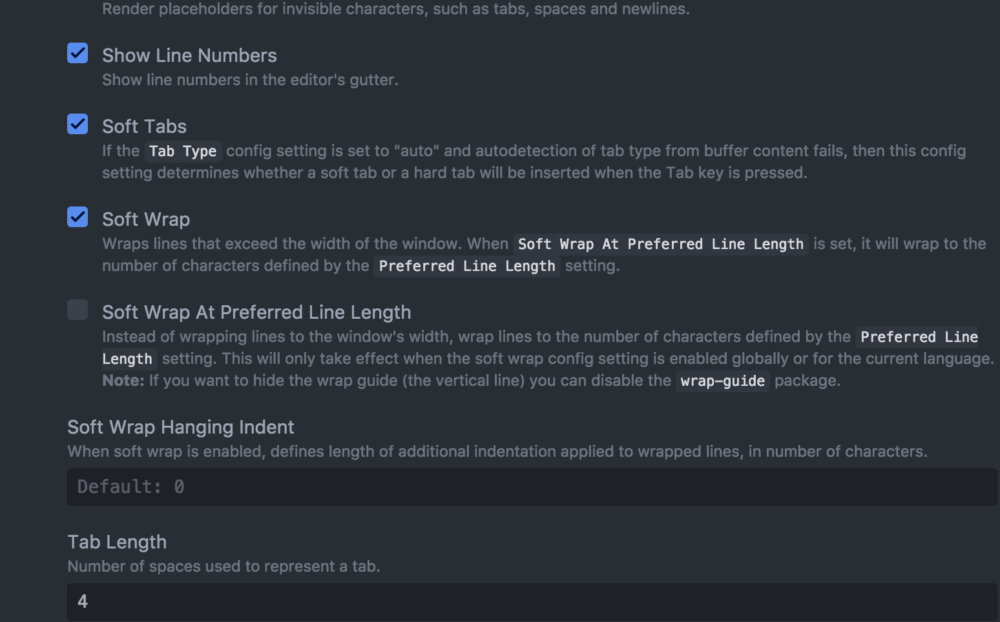

☰ 目录
atom 的使用手册
安装包
这个安装比sublime还简单：cmd+, ; 然后在install选项卡搜索插件即可， 还能看说明文档；
命令面板
1- command+p: 快速搜索
2- command+,: 打开设置
3- command + O: 打开文件

安装命令行后， atom file.txt 就能打开文件；
atom 目录 打开文档树；
Ctrl + P: 光标上一行；
Ctrl + N: 光标下一行；
Ctrl + B: 光标向左；
Ctrl + F: 光标向右；
Alt + F: 移到下一个单词的开头；
Alt+ H：删除光标前一个单词
command + —>: 移到一行的末尾 ；
Ctrl + A: 移到行头；
Ctrl + G： 跳到指定行；
cmd+\: 显示/隐藏目录树
打开终端
像你说的使用快捷键打开终端的package我用的是atom-terminal 1.0K，
默认的快捷键：
于当前目录打开终端是ctrl-shift-t;
于project目录打开终端是alt-shift-t。
查看函数声明的文件
不同语言可选用的插件不一样
有的语言有支持较好的插件，比如go可以考虑go-plus 80,这个会安装相关的一些插件,跳转也是语义级别支持
有的语言没有语义支持的插件，可以考虑atom-ctags 233
熟悉vim的就知道了，这个也是基于ctags来做跳转的
ctags 用命令就是： ctags -R . ， 末尾的 . 表示当前目录
方案一
1- 先安装 symbol-gen
然后用 cmd + alt + g: 在当前目录下生成 .tags 文件；
Cmd + shift + r: 跳转；
2- 安装 symbol-view
If your project has a tags/.tags/TAGS/.TAGS file at the root then following are supported:
| Command |
Description |
Keybinding (Linux) |
Keybinding (macOS) |
Keybinding (Windows) |
symbols-view:toggle-file-symbols |
Show all symbols in current file |
ctrl-r |
cmd-r |
ctrl-r |
symbols-view:toggle-project-symbols |
Show all symbols in the project |
ctrl-shift-r |
cmd-shift-r |
ctrl-shift-r |
symbols-view:go-to-declaration |
Jump to the symbol under the cursor |
ctrl-alt-down |
cmd-alt-down |
|
symbols-view:return-from-declaration |
Return from the jump |
ctrl-alt-up |
cmd-alt-up |
|
3- go-definition： 不太好用啊
右键：goto definition 或者 cmd + alt + enter
参考
跳转快捷键的参考：
'atom-text-editor[data-grammar~="php"]:not([mini])':
'ctrl-]': 'atom-ctags:go-to-declaration'
'ctrl-t': 'atom-ctags:return-from-declaration'
'atom-text-editor[data-grammar~="go"]:not([mini])':
'ctrl-]': 'golang:godef'
'ctrl-t': 'golang:godef-return'
'atom-text-editor[data-grammar~="python"]:not([mini])':
'ctrl-]': 'autocomplete-python:go-to-definition'
'atom-text-editor[data-grammar~="perl"]:not([mini])':
'ctrl-]': 'atom-ctags:go-to-declaration'
'ctrl-t': 'atom-ctags:return-from-declaration'
其它参考： https://www.zhihu.com/question/32242183
插件
1- atom-shell-commands
设置
确认下 打勾的， Tab Length 即可；

参考
1- https://mba811.gitbooks.io/mac-dev/content/Atom/
2- 这是一个比较全的参考： https://www.jeffjade.com/2016/03/03/2016-03-02-how-to-use-atom/
和 sublime 有对比；